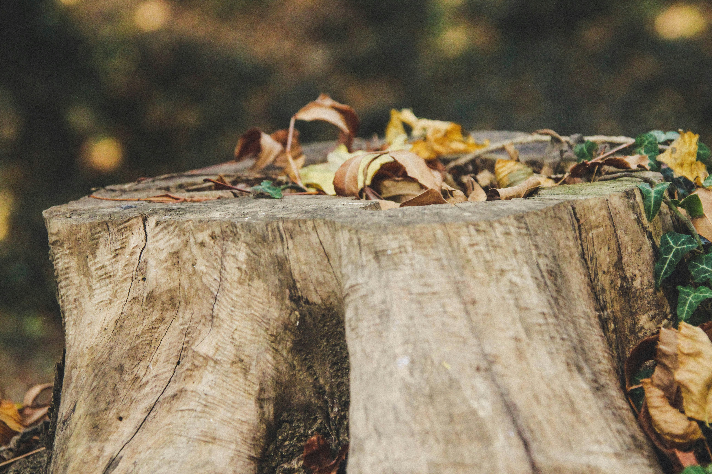
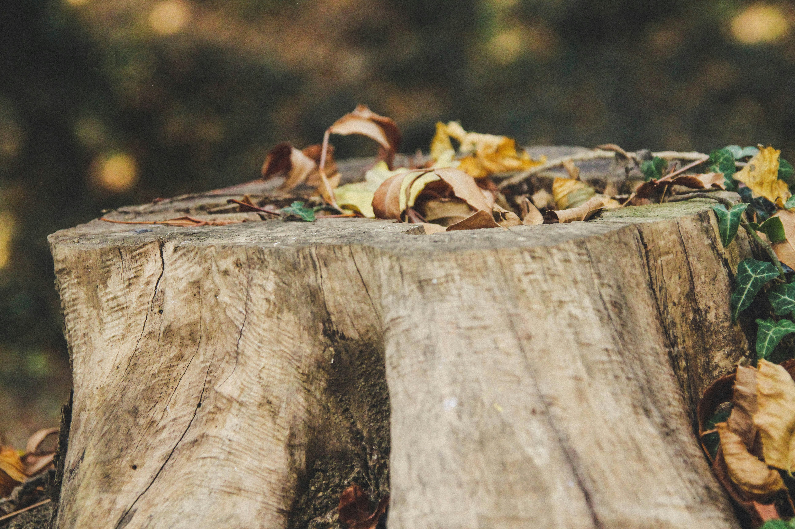

ホーム＞コンセプト
くすのきでは "温かみあふれる木製製品を長く愛用してほしい"と思い、
木材にもこだわりながら心をこめて手作りで制作しています。
・ブナ材…木目はきめ細かく、重硬で粘りがあり、割れにくため、曲木加工に適する。
・イタヤカエデ材…堅くて緻密な材であり、棒や球体などに多く使われる。
・ヒノキ材…日本特産種。美しい光沢が出るとともに特有な芳香がある。高品質な材料として使われる。
・セン材 …北海道産。色白で木目がはっきりとして美しいため、木目を活かした玩具に用いる。
軽く軟らかく加工がしやすい。
・クスノキ材…四国、台湾産。緻密で、耐湿・耐久性に優れる。時に美しい杢が出ることもある。
 

| １９７０年 ９月１日 |
「木製玩具森村」玩具専門店 創業 初代店主恵一郎 ３０歳 カタカタ（子供手押し車）などを中心に制作販売していた。 |
| ２０１５年 ９月１日 |
創業年数４５年を迎える。 |
| ２０２２年 | 息子の恵吾が父から事業を引継ぎ、店名を「くすのき」とする。 子ども用のおもちゃに限らず、木製工芸品や日用雑貨など多岐にわたる商品を手掛けている。 |